インターネットの接続をして下さい。
Wifiは画面右上の次の場所から接続できます。
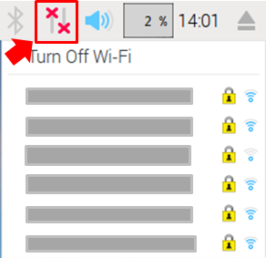
アップデート
次のコマンドを入力してLinuxカーネルの更新を行ってください。
sudo apt-get update
sudo apt-get upgrade
１．日本語フォントのインストール
次のコマンドを実行してください。
sudo apt-get install -y ttf-kochi-gothic xfonts-intl-japanese xfonts-intl-japanese-big xfonts-kaname
２．日本語入力環境のインストール
日本語と英語は SHIFT+スペースキーで切り替えることが出来ます。
sudo apt-get install -y uim uim-anthy

１．キーボードの設定
１－１．menu→Preferences→Keyboard and Mouseの順にクリックします。
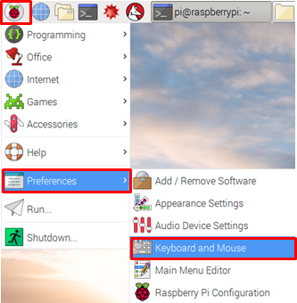
１－２．『keyboard Layout』をクリックして開きます。
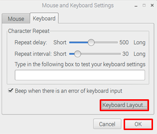
１－３.下図のように選択して、『OK』をクリックします。
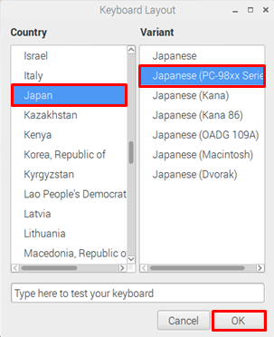
２．Raspberry Pi Configurationの設定
２－１．menu→Preferences→Raspberry Pi Configurationの順にクリックします。
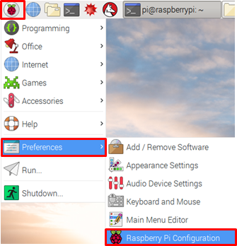
２－２．「Raspberry Pi Configuration」の画面が開いたら、「Interface」をクリックします。
(この画面だけ日本語で申し訳ございません）
Lazurite Pi Gatewayは、SPIとI2Cの双方を使用していますので、両方とも有効にしてください。
２－３．続いて、「Localisation」をクリックします。
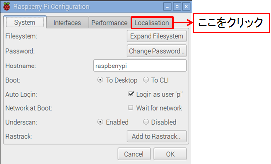
２－３．「Localisation」内の①～③の項目を変更します。
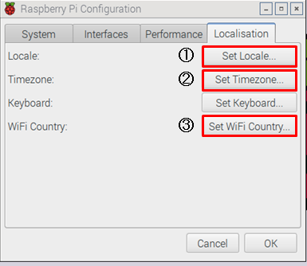
①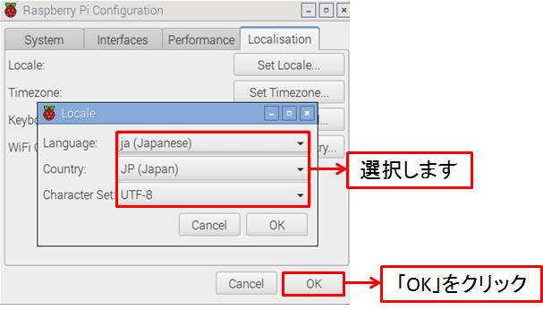
②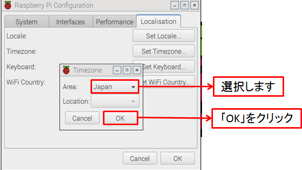
③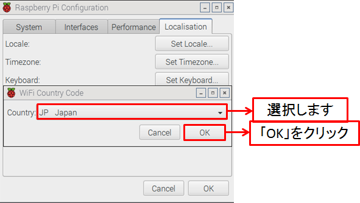
２－４．変更完了後、「OK」をクリックすると再起動画面が立ち上がるので、「Yes]をクリックして再起動します。
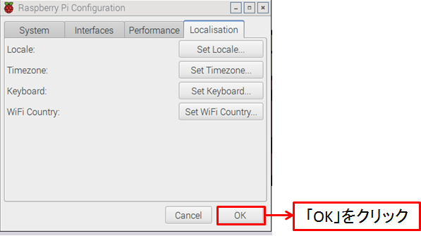
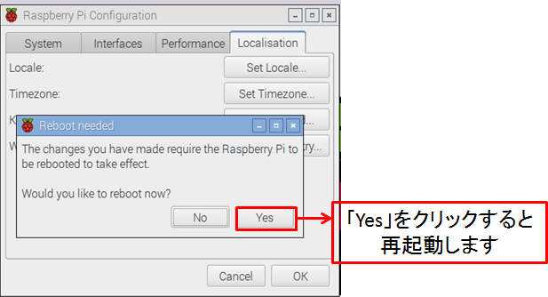
| 前[Raspberry Piを起動する] | [Lazurite用ソフトウエアのインストール」次 |